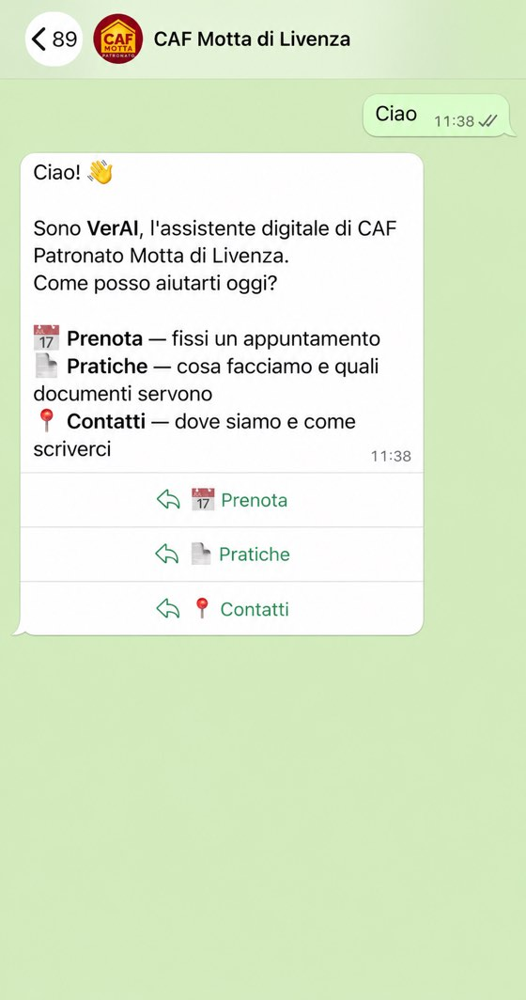

Il progetto più recente raccontato per esteso, e due consulenze da cui sono usciti piani concreti.
Un CAF e patronato vive sullo sportello: davanti hai una persona con la sua pratica, e intanto il telefono suona. La maggior parte delle chiamate non erano domande complicate — erano prendere un appuntamento e sapere che documenti portare. Ogni squillo interrompeva chi era già seduto, e quello che arrivava fuori orario si perdeva.
Non serviva un centralino nuovo né un gestionale: serviva togliere dal telefono solo quel primo giro. Abbiamo scelto WhatsApp perché è l'unica app che i loro assistiti hanno già e sanno usare, e perché lascia una traccia scritta di quello che è stato detto.
Il primo contatto ora avviene per iscritto e fuori dall'orario di sportello. Chi si presenta ha già con sé i documenti giusti, quindi la pratica si chiude in una volta sola invece che in due. E le richieste che arrivano di sera o nel weekend non si perdono più: restano lì, prenotate.

Il primo messaggio del bot,
come lo riceve chi scrive
Un'azienda storica che voleva capire dove l'AI ha senso e dove no. Abbiamo ragionato su come sapere in ogni momento cosa c'è e cosa manca senza andare a controllare a mano, e su cosa serve avere già in ordine perché un sistema del genere stia in piedi. Ne è uscita una mappa di priorità: cosa conviene fare subito e cosa può aspettare.
Un risto-pub dove pubblicare sui social era sempre l'ultima cosa della settimana, e il menù cambiava senza che nessuno lo aggiornasse online. Abbiamo visto come automatizzare la pubblicazione dei contenuti e come tenere un menù online modificabile in due minuti dal telefono, senza dover chiamare nessuno ogni volta che cambia un piatto.
Hai una domanda su cosa può fare l'AI nella tua realtà?
Prima parliamoci →